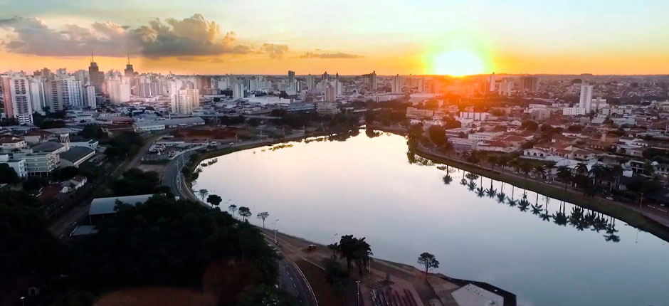
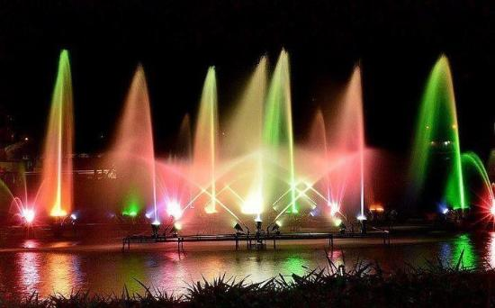
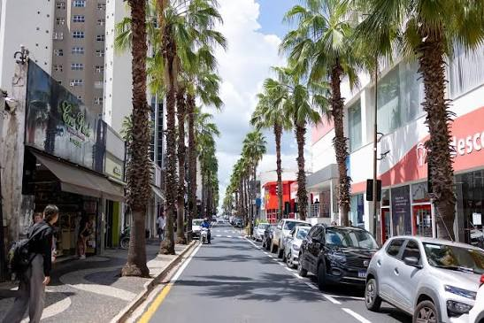
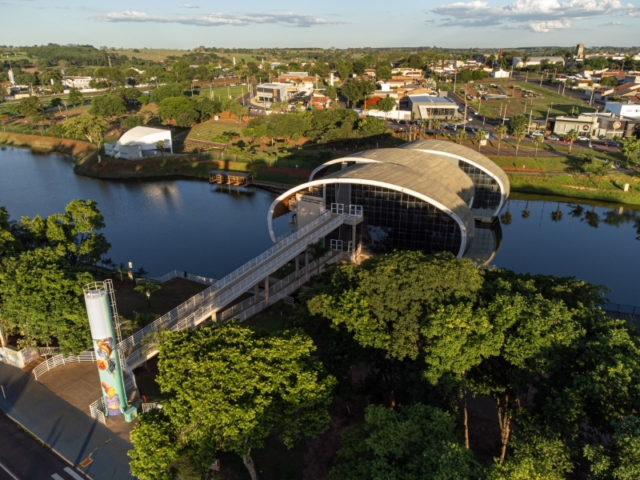

Um poquinho sobre as duas cidades nas quais eu me desloco atualmente.

A história de São José do Rio Preto começou por volta de 1840, quando pioneiros mineiros se fixaram na região para explorar a agricultura e criar animais. A fundação oficial ocorreu em 19 de março de 1852, liderada por João Bernardino de Seixas Ribeiro, com a construção de uma capela dedicada a São José às margens do Rio Preto
Represa Municipal: O maior parque urbano da cidade, ideal para caminhar, andar de bicicleta e ver capivaras.
Complexo Cultural e Teatro Paulo Moura: Espaço de eventos e shows às margens da represa.
Parques Ecológicos (Norte e Sul) e Zoobotânico: Áreas verdes ótimas para contato com a natureza e lazer em família.

Nome composto: A Prefeitura do Município de São José do Rio Preto explica que o nome une o padroeiro São José ao Rio Preto, curso d'água que corta a região.
Fundação rústica: A cidade nasceu de uma capela erguida por mineiros ao redor de uma clareira na divisa de córregos locais.
Polo de Saúde: É referência nacional em medicina e procedimentos de alta complexidade, atraindo pacientes de vários estados.
Capital da Borracha: A região noroeste paulista destacou-se historicamente como grande produtora nacional de borracha (látex).

Votuporanga foi fundada oficialmente em 8 de agosto de 1937, nascendo do loteamento de terras da antiga Fazenda Marinheiro de Cima. A cidade cresceu com o ciclo do café, a chegada da ferrovia e tornou-se um importante polo regional no noroeste paulista.
Parque da Cultura: Principal complexo de lazer da cidade, conta com áreas verdes, pistas de caminhada, biblioteca e espaços para eventos.
Catedral Nossa Senhora Aparecida: Cartão-postal localizado na Praça da Matriz, imponente templo que se tornou sede da diocese.
Concha Acústica / Centro Cultural: Palco tradicional de shows, festivais e apresentações artísticas abertas ao público.

Significado do nome: Escolhido por um membro do Instituto Histórico e Geográfico de SP, traduz-se como "brisa suave" ou "colina bonita".
Cidade planejada: Ruas e praças foram desenhadas antes da chegada dos moradores.
Polo moveleiro: Abriga mais de 200 indústrias voltadas ao setor de móveis.
Fama festiva: É amplamente conhecida na região por sua força cultural e grandes eventos de carnaval.